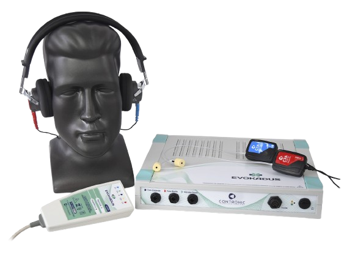

DEA
Função do Aparelho
O Evokadus é um equipamento utilizado para realizar Potenciais Evocados Auditivos de Tronco Encefálico (BERA/ABR), além de outros tipos de exames neurofisiológicos (MLR, LLR, P300, VEMP, etc.). A função principal do BERA é avaliar a integridade das vias auditivas do nervo coclear até o tronco encefálico, de forma objetiva, sem depender da resposta consciente do paciente.
Ficha Técnica do Aparelho
Modelo: Evokadus
Fabricante: Contronic Sistemas Automáticos Ltda (Brasil)
Exames Realizados:
- ABR – Resposta Auditiva de Tronco Encefálico
- ASSR – Resposta Auditiva de Estado Estável
- T-ABR – ABR de Triagem
- EcochG – Eletrococleografia
- MLR – Respostas de Média Latência
- LLR – Respostas de Longa Latência
- P300 – Potencial Cognitivo
- MMN – Mismatch Negativity
- cVEMP – Potencial Miogênico Vestibular Cervical
- oVEMP – Potencial Miogênico Vestibular Ocular
- gVEMP – Estimulação Galvânica Vestibular
Componentes Principais:
- Estimulador acústico e galvânico
- Interface biológica EVKBIO
- Software Evokadus para Windows
Acessórios Inclusos:
- Cabos de conexão
- Eletrodos de superfície
- Fones de inserção ou convencionais (auriculares)
Física Envolvida
O funcionamento do Evokadus baseia-se em princípios bioelétricos complexos, que envolvem as seguintes etapas:
- Potencial elétrico no corpo: As células nervosas comunicam-se por impulsos elétricos chamados potenciais de ação, gerados pela diferença de carga entre o interior e o exterior das células.
- Estímulo aplicado: O aparelho emite estímulos sonoros ou galvânicos (correntes elétricas suaves) que ativam as regiões auditivas ou vestibulares do sistema nervoso.
- Resposta neural: O estímulo provoca respostas elétricas específicas nos neurônios do nervo auditivo e áreas cerebrais, gerando potenciais evocados.
- Captação do sinal: Eletrodos posicionados na pele captam os sinais elétricos resultantes, que são muito pequenos (na ordem de microvolts).
- Amplificação e filtragem: O sinal é amplificado e filtrado para remover ruídos e destacar as frequências de interesse.
- Média de respostas: O estímulo é repetido diversas vezes, e o software calcula a média das respostas para melhorar a qualidade do sinal final.
- Análise temporal: O software analisa a latência e a forma das ondas para identificar respostas normais ou alterações clínicas.
- Aplicação em exames vestibulares: Em testes VEMP, estímulos galvânicos provocam respostas musculares que também são captadas e analisadas.
- Cuidados físicos: A preparação da pele e a proteção contra interferências eletromagnéticas são essenciais para a qualidade dos sinais.
Esses processos permitem ao Evokadus realizar diagnósticos precisos e não invasivos do sistema auditivo e vestibular, baseados na análise rigorosa dos potenciais elétricos evocados.
Gráfico de Potenciais Evocados
Falhas Comuns e Soluções
| Problema | Causa | Solução |
|---|---|---|
| Ruído excessivo | Aterramento inadequado | Refazer a conexão e posicionar corretamente os eletrodos |
| Ausência de resposta | Paciente agitado ou má conexão | Garantir repouso e revisar cabos |
| Latência alterada | Configuração de filtro ou calibração | Revisar e recalibrar |
Importância Clínica
- Diagnóstico auditivo objetivo em bebês e pacientes não colaboradores
- Detecção de alterações no nervo auditivo ou tronco cerebral
- Avaliação vestibular através de VEMP
- Investigação cognitiva com P300 e MMN